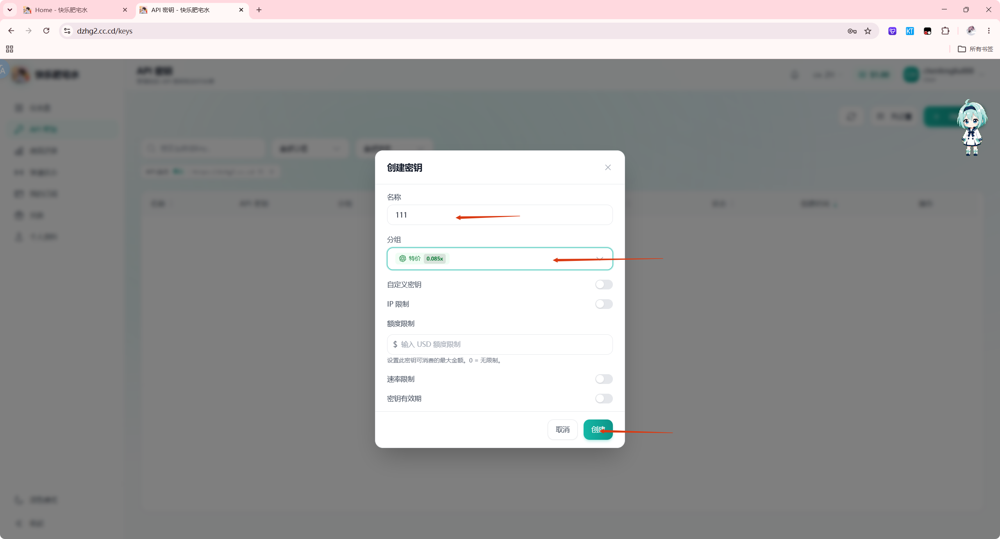
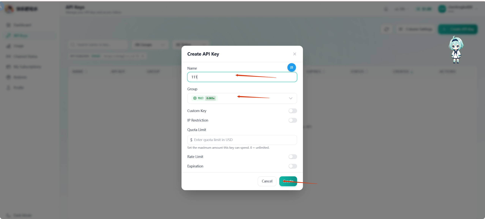

步骤 01
STEP 01
创建 API 密钥
Create an API key
进入“API 密钥”，点击“创建密钥”。名称可自由填写，分组代表不同的价格倍率与稳定性。特价组价格最低，但可能出现错误或断连。
Open API Keys and select Create API Key. The name is up to you. Groups have different prices and stability. The special-price group costs less but may return errors or disconnect.
按需要选择分组。较高倍率通常意味着更好的稳定性和更高价格。
Select a group for the task. A higher multiplier usually means more stability and a higher price.

